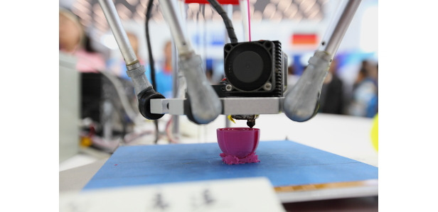

Виды печати
В начале 1990-х годов компания Чарльза Халла, 3D Systems Corporation (которая и сегодня является одним из лидеров отрасли) начала производство аппаратов, работающих по технологии лазерной стереолитографии из фотополимеров (SLA). В
то же время, стартап DTM получил патент на изобретенную Карлом Декардом (из Техасского университета) технологию селективного лазерного спекания (SLS), где вместо жидкого материала воздействию лазера подвергался порошок. Третья
технология, моделирование методом наплавления (FDM), была разработана в тот период под руководством Скотта Крампа в компании Stratasys и используется до сих пор, в основном, в базовых моделях 3D-принтеров. Разумеется, самые первые
аппараты не были совершенными, при затвердевании материала объект часто искривлялся. Несмотря на свои недостатки и высокую стоимость, такие технологии, как стереолитография, безусловно, обладают огромным потенциалом, который продолжает
исследоваться и сейчас.
Следующее десятилетие было отмечено рядом важнейших событий с точки зрения применения технологий 3D-печати в медицине. Первым из них стала успешная имплантация мочевого пузыря, напечатанного на 3D-принтере. Готовый орган был покрыт
клетками самого пациента, что практически сводило к нулю шансы на отторжение имплантата. Впоследствии было объявлено о создании полностью функционирующей уменьшенной копии почки, однако это заявление было опровергнуто. Даже сейчас
ученые признают, что создание полностью функционирующих сложных органов, таких как почки или печень, пригодных для трансплантации, будет возможно не раньше, чем через несколько лет или даже десятилетий. Разными исследователями
создавалась модель почки, но основной проблемой остается система крупных и мелких кровеносных сосудов, поскольку без нее орган не сможет функционировать в теле пациента. Тем не менее, значительные успехи отмечались в создании более
простых органов, хрящей и кровеносных сосудов, распечатанных на 3D-принтере с использованием только человеческих клеток в качестве материала, не говоря уже о костных имплантатах. Это направление исследований стремительно развивается,
например, с внедрением печати живой тканью и разработками в сфере протезов со сложной конструкцией, не требующих сборки.
